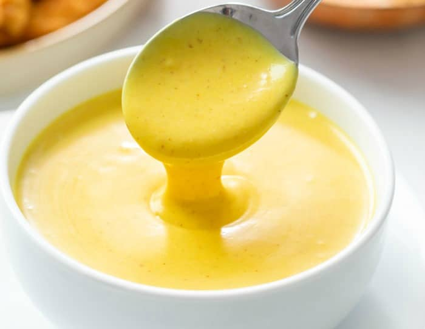

Bickle's Quality Honey Mustard

Description
Listen you fuckers, you screwheads. Here is a man who would not take it anymore. A man who stood up against
that terrible processed garbage honey mustard they sell at the bodega. I make my own now. Perfect for when the
days go on and on. They don't end.
Ingredients
- 1/2 cup of mayo
- 2 tablespoons of honey
- 2 tablespoons of yellow mustard
- 1 tablespoon dijon mustard
- 1/2 tablespoon of lemon juice
Steps
- Mix all that together in a bowl.
- Cover it and throw it in the refrigerator.
- Work 18 consecutive hours driving your cab.
- It should be alright.
BACK TO HOME